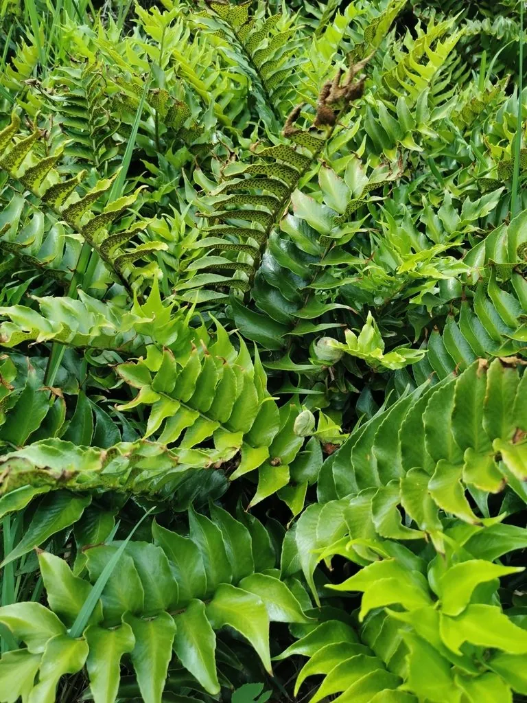

蕨类与裸子植物 · 植物界
全缘贯众 Cyrtomium falcatum

鳞毛蕨科贯众属陆生蕨类，羽片镰刀形、边缘全缘，耐盐耐旱，常生于海岸岩缝，是贯众属中最耐滨海环境的种类。
- 分类
- 门蕨类植物门纲水龙骨纲目水龙骨目科鳞毛蕨科属贯众属
- 栖息环境
- 海岸岩缝、石墙与阴湿坡地，耐盐雾、耐旱
- 地理分布
- 中国辽宁、山东、江苏、浙江、福建、广东、台湾；日本、朝鲜半岛
- 保护级别
- 暂无评估；未被列入国家重点保护野生植物名录
物种志
全缘贯众为鳞毛蕨科贯众属陆生蕨类，植株高三十至六十厘米，根状茎直立，密被褐色鳞片。叶片一回羽状，羽片五至十对，镰刀形，革质，边缘全缘，表面深绿有光泽，先端渐尖。孢子囊群圆形，散生于羽片背面，孢子期夏秋季。
全缘贯众分布于中国辽宁、山东、江苏、浙江、福建、广东、台湾等地，日本、朝鲜半岛也有，多生于海岸岩缝、石墙和阴湿坡地。它喜半阴、耐盐雾、耐旱，适宜疏松排水良好的石灰质土壤，是贯众属中最耐滨海环境的种类。叶形优美、四季常青，可作阴湿处的观叶植物；根状茎在中药中称贯众，有清热解毒、驱虫之效，但需在专业指导下使用。
形态与习性
- 株高30–60 cm，根茎被鳞片
- 叶形一回羽状，羽片镰刀形
- 孢子期夏秋季，囊群圆形
- 光照喜半阴，忌强光暴晒
- 水分喜湿润，耐短期干旱
- 土壤疏松排水良好的石灰质土
- 主要用途阴湿处观叶，根茎入药
趣味知识
- 全缘贯众的羽片边缘光滑无齿，形似镰刀，是贯众属中少见的全缘种类。
- 它常扎根于海边的石墙和岩缝，耐盐雾能力在蕨类中十分突出。
- 贯众的根状茎在中药中用于驱虫解毒，但全草有毒，不可自行服用。